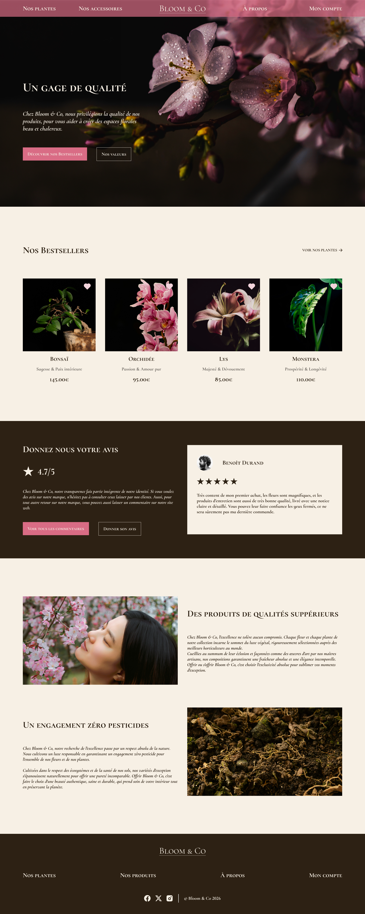
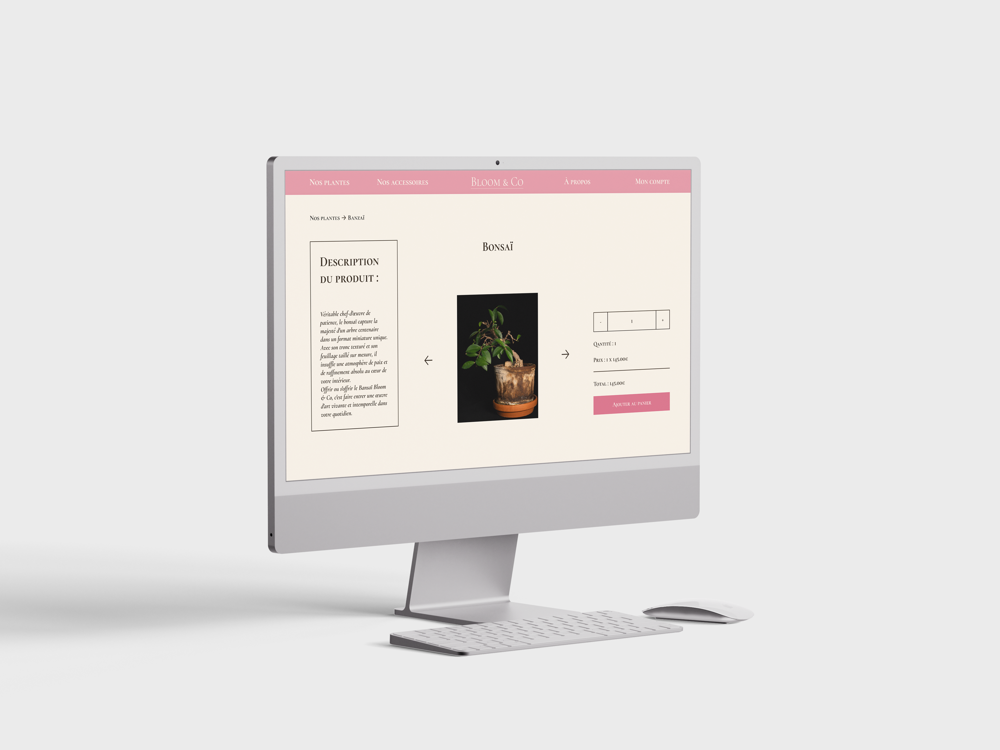

Bloom & Co
Projet scolaire
Figma, Photoshop
2026
Ce projet consiste à concevoir la page d'accueil (desktop) du site e-commerce de Bloom & Co, une marque de plantes d'intérieur d'exception destinée aux citadins actifs (25-45 ans) souhaitant végétaliser leur intérieur sans prise de tête.
Pour ce projet, j'ai opté pour une charte graphique douce et naturelle associant le rose, pour la tendresse, au brun, pour le côté naturel et luxueux. J'ai également choisi la police fine à empattements "Cormorant" afin de renforcer l'élégance du site.
Mon objectif était d'offrir une navigation fluide et agréable via une interface claire, contrastée et visuellement cohérente.